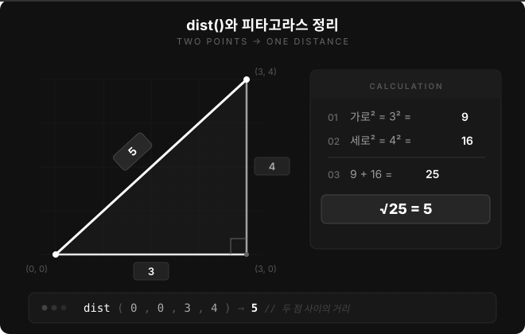
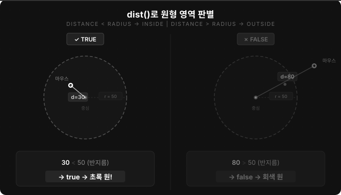

4주차 1교시 — if/else 조건문
강의 아웃라인: week-04-outline 다음 교시: week-04-period2-student (마우스·키보드 인터랙션)
| 항목 | 내용 |
|---|---|
| 대상 | P5.js 입문자 (테크아트 전공) |
| 소요 시간 | 50분 (45분 + 버퍼 5분) |
| 핵심 도구 | P5.js Web Editor |
-
if/else조건문의 구조를 이해하고 활용할 수 있습니다 - 비교 연산자(
>,<,===,!==)와 논리 연산자(&&,||,!)를 사용할 수 있습니다 -
dist()함수로 원형 영역 판별을 구현할 수 있습니다 -
for문과 조건문을 결합해 조건부 패턴을 만들 수 있습니다
도입
실습과제 1(P5.js Web Editor 링크 공유)을 아직 제출하지 않았다면 오늘 안으로 제출하세요. 제출하면 만점입니다.
3주차 연결
3주차에서 for문으로 무지개 원, 격자, 그라데이션 같은
다양한 패턴을 만들었습니다. 그런데 그 패턴은 항상 같은
방식으로 그려집니다. 실행할 때마다 같은 그림이 나옵니다.
만약 마우스를 왼쪽에 놓으면 파란색, 오른쪽에 놓으면 빨간색이라면? 만약 키보드를 누르면 도형이 원에서 사각형으로 바뀐다면?
이 ‘만약 ~하면’을 코드로 표현하는 것이 바로
조건문입니다. 영어 키워드는 if입니다.
인터랙티브 미디어아트 사례
인터랙티브 미디어아트는 관객이 무언가를 하면 작품이 반응하는 설치 작품입니다. 여러 작품에서 오늘 배울 조건문과 비슷한 판단 구조를 발견할 수 있습니다.
사례 1: Steve Zafeiriou — “Sensorify” (2023)
카메라가 관객의 표정을 실시간으로 읽어서, 감정에 따라
다른 제너레이티브 비주얼을 생성합니다. 코드로 생각하면
if (표정 === "웃음") { 따뜻한 색상 } else if (표정 === "슬픔") { 차가운 톤 }처럼
표현할 수 있습니다. 뇌파(EEG) 센서까지 활용한 작품으로, MOMus
현대미술관(그리스)에 전시되었습니다. 링크: Sensorify — Steve
Zafeiriou
사례 2: 사일로랩(SILO Lab) — 몰입형 인터랙티브 설치
(한국) 사일로랩은 한국의 크리에이티브 스튜디오입니다. “묘화”는
관객이 다가가면 백열등이 반응하고, “풍화”는 300개
랜턴이 움직임에 따라 변화합니다. 코드로 생각하면
if (관객 거리 < 임계값) { 조명 밝게 } else { 천천히 페이드 }와
같은 구조입니다. 국립아시아문화전당, 덕수궁, 서울시립미술관 등에서
전시했습니다. 링크: SILO Lab 공식
사이트
사례 3: Jeffrey Roe — “Stopping Time” (2025) 영상이
재생되다가 관객이 앞에 서면 화면이 꺼집니다. 관객이
떠나면 다시 재생됩니다. 이 작품의 코드 핵심은
if (personDetected) { stopVideo(); } else { playVideo(); }처럼
표현할 수 있습니다. 라즈베리파이와 PIR 센서로 만든 미니멀한 설치
작품입니다. 링크: Stopping
Time — Tog Hackerspace
사례 4: “Compositions in Code” 전시 (2025, 뉴욕) Museum of the Moving Image에서 열린 Processing/p5.js 전시입니다. 우리가 배우는 도구로 만든 작품들을 다룹니다. p5.js 아티스트 Aleksandra Jovanic, Processing 선구자 Marius Watz 등 6인의 작품이 전시되었습니다. 링크: Compositions in Code — MoMI
이 작품들의 공통점은 — 표정 감지든, 거리 센서든, 마우스 클릭이든 전부
‘만약 ~하면’이라는 조건 판단이 핵심이라는 것입니다.
오늘 배울 if문 하나만 알면, 이런 인터랙티브 스케치의
첫 발을 뗄 수 있습니다.
핵심 개념 1 — if문 기본 구조
일상 비유
조건문은 우리가 매일 쓰는 논리입니다.
| 일상 언어 | 코드 |
|---|---|
| “만약 비가 오면 → 우산을 쓴다” | if (비가 온다) { 우산을 쓴다; } |
| “만약 배고프면 → 밥을 먹는다” | if (배고프다) { 밥을 먹는다; } |
프로그래밍에서도 같은 구조를 사용합니다. 만약 (조건이 맞으면) { 이 코드를 실행한다 }
문법
if (조건) {
실행할 코드
}괄호 () 안에 조건을 쓰고, 중괄호
{} 안에 실행할 코드를 씁니다. 조건이
맞으면(true) 중괄호 안이 실행되고, 안 맞으면(false) 건너뜁니다.
실행 흐름 시각화:
코드 실행 → 조건 확인
│
┌────┴────┐
│ │
true false
│ │
{ 실행 } 건너뜀
│ │
└────┬────┘
│
다음 코드로 →코드는 위에서 아래로 쭉 가다가 if를 만나면
갈림길이 생깁니다. 조건에 따라 한쪽 길만 갑니다.
비교 연산자
조건을 만들려면 값을 비교해야 합니다.
| 연산자 | 의미 | 예시 | 결과 |
|---|---|---|---|
> |
크다 | 5 > 3 |
true |
< |
작다 | 5 < 3 |
false |
>= |
크거나 같다 | 5 >= 5 |
true |
<= |
작거나 같다 | 3 <= 5 |
true |
=== |
같다 | 5 === 5 |
true |
!== |
같지 않다 | 5 !== 3 |
true |
===는 등호가 3개입니다. 2주차에서
=은 값을 넣는 것(대입)이라고 배웠습니다.
let x = 5에서 =는 ‘5를 x에 넣어라’. 그런데
===는 ’같은지 비교해라’입니다.
| 기호 | 의미 | 배운 시기 |
|---|---|---|
= |
값 대입 (넣기) | 2주차 |
=== |
같은지 비교 (확인) | 4주차 (오늘) |
흔한 실수 — = 하나만 쓰기
// 잘못된 코드 — = 하나만 쓴 경우
if (mouseX = 200) { // 이건 '200을 mouseX에 넣어라'라는 대입이 됩니다!
background(255, 0, 0);
}
// 올바른 코드 — === 세 개
if (mouseX === 200) { // 'mouseX가 200과 같은지 비교해라'
background(255, 0, 0);
}실수로 =을 쓰면 문법 오류가 나지 않아도 의도와 다르게
동작할 수 있습니다. 이런 문제가 생기면 먼저 =과
===를 확인하세요.
P5.js 첫 예시: 마우스 위치에 따른 배경색
2주차에서 배운 mouseX가 다시 등장합니다. 마우스 위치는
계속 바뀌니까 매 프레임 확인해야 합니다. 그래서 setup()이
아니라 draw() 안에 씁니다.
function setup() {
createCanvas(400, 400);
}
function draw() {
background(220); // 기본: 회색
if (mouseX > 200) {
background(255, 0, 0); // 마우스가 오른쪽이면 빨강!
}
}실행 결과: - 마우스를 캔버스 왼쪽(x < 200)에 놓으면 → 회색 배경 - 마우스를 캔버스 오른쪽(x > 200)에 놓으면 → 빨간 배경
if (mouseY > 200)으로 바꾸면 어떻게 될까요?
답: 마우스가 아래쪽에 있을 때 빨간 배경이 됩니다. y좌표로 비교하니까요.
코드 실행 추적 (mouseX = 250일 때):
1. background(220) → 먼저 회색으로 칠함
2. mouseX > 200? → 250 > 200 → true!
3. background(255, 0, 0) → 빨간색으로 다시 칠함 (회색을 덮어씀)코드 실행 추적 (mouseX = 100일 때):
1. background(220) → 먼저 회색으로 칠함
2. mouseX > 200? → 100 > 200 → false
3. { } 안의 코드 건너뜀 → 회색 유지이렇게 한 줄씩 추적하는 것을 트레이싱(tracing)이라고 합니다. 코드가 예상대로 안 될 때, 한 줄씩 따라가면 어디서 틀렸는지 찾을 수 있습니다.
핵심 개념 2 — if/else와 else if
if/else — “둘 중 하나”
’왼쪽이면 파랑, 오른쪽이면 빨강’처럼 둘 중 하나를
선택하고 싶으면 else를 씁니다.
function setup() {
createCanvas(400, 400);
}
function draw() {
if (mouseX > width / 2) {
background(255, 0, 0); // 오른쪽: 빨강
} else {
background(0, 0, 255); // 왼쪽: 파랑
}
}if (조건) { A } else { B } — 조건이 맞으면 A, 아니면 B.
반드시 둘 중 하나만 실행됩니다.
조건 확인
│
┌────┴────┐
│ │
true false
│ │
{ A 실행 } { B 실행 }
│ │
└────┬────┘
│
다음 코드 →if만 쓰면 false일 때 아무것도 안
하지만, if/else를 쓰면 false일 때 B를
실행합니다.
width / 2를 썼는데, width는 캔버스
너비(400)니까 width / 2는 200입니다. 숫자 200을 직접 쓰는
것보다 width / 2가 좋습니다 — 캔버스 크기를 바꿔도 자동으로
가운데가 되니까요.
else if — “세 가지 이상”
세 가지로 나누고 싶으면 else if를 추가합니다.
function setup() {
createCanvas(400, 400);
}
function draw() {
if (mouseX < width / 3) {
background(255, 0, 0); // 왼쪽 1/3: 빨강
} else if (mouseX < width * 2 / 3) {
background(0, 255, 0); // 가운데 1/3: 초록
} else {
background(0, 0, 255); // 오른쪽 1/3: 파랑
}
}캔버스를 세 영역으로 나누고, 마우스가 어디에 있느냐에 따라 다른
배경색이 나옵니다. else if를 더 추가하면 4등분, 5등분도
가능합니다. (단, else if가 많아지면 코드가 길어집니다. 그럴
때는 6주차에서 배울 ’배열’로 더 간결하게 처리할 수 있습니다.)
else if 없이 if를 세 번 연속 쓰면
같을까요?
답: 다릅니다. if-else if-else는 하나만
실행되는데, if를 세 번 쓰면 조건이 맞는 것
전부 실행됩니다. 지금은 if-else if-else를
쓰세요.
핵심 개념 3 — boolean과 논리 연산자
true와 false
조건문의 괄호 안은 항상 결과가 true 아니면
false입니다. 이것을 boolean(불리언)이라고
합니다.
mouseX > 200 // → true 또는 false
5 === 5 // → true
3 > 10 // → false조건이 true면 실행, false면 건너뜀.
논리 연산자: 여러 조건 조합하기
조건 하나로는 부족할 때가 있습니다. ‘마우스가 이 영역 안에 있는지’ 확인하려면 조건이 여러 개 필요합니다.
| 연산자 | 이름 | 의미 | 예시 |
|---|---|---|---|
&& |
AND (“그리고”) | 둘 다 true여야 true | A && B |
\|\| |
OR (“또는”) | 하나만 true여도 true | A \|\| B |
! |
NOT (“아님”) | true ↔ false 반전 | !A |
진리표:
| A | B | A && B |
A \|\| B |
|---|---|---|---|
| true | true | true | true |
| true | false | false | true |
| false | true | false | true |
| false | false | false | false |
AND(&&)는 둘 다 true여야 true.
OR(||)은 하나만 true여도 true. 일상으로
비유하면 — ’밥도 먹고 숙제도 해야 외출 가능’은
&&, ’전화하거나 문자하면 연락
성공’은 ||.
실용 예시: 사각형 영역 판별
‘마우스가 이 사각형 안에 있는지’ 판별하려면 조건 4개를
&&로 연결합니다.
function setup() {
createCanvas(400, 400);
}
function draw() {
background(220);
// 사각형 영역 표시 (x: 100~300, y: 100~300)
stroke(0);
noFill();
rect(100, 100, 200, 200);
// 마우스가 사각형 안에 있는지?
if (mouseX > 100 && mouseX < 300 && mouseY > 100 && mouseY < 300) {
fill(255, 0, 0); // 안에 있으면: 빨강
} else {
fill(200); // 밖이면: 회색
}
noStroke();
ellipse(mouseX, mouseY, 30, 30);
}x가 100보다 크고 그리고 300보다 작고
그리고 y가 100보다 크고 그리고 300보다
작을 때. 네 개 다 만족해야 true입니다. AND(&&)는
하나라도 false가 나오면 전체가 false입니다.
핵심 개념 4 — dist()로 영역 판별
사각형은 && 4개로 했는데, 원형
영역은 어떻게 할까요? dist() 함수를 씁니다.
dist() — 두 점 사이 거리
dist(x1, y1, x2, y2)두 점 사이의 거리를 계산해줍니다. dist(0, 0, 3, 4) → 5.
마우스와 원 중심 사이 거리를 재서, 반지름보다 작으면 ’안에 있다’고
판단합니다. 수학 시간에 배운 피타고라스 정리(직각삼각형
빗변 길이)를 dist() 한 줄이 해결해줍니다.

function setup() {
createCanvas(400, 400);
}
function draw() {
background(220);
// 원 영역 표시 (중심: 200,200 / 반지름: 50)
stroke(0);
noFill();
ellipse(200, 200, 100, 100);
// 마우스가 원 안에 있는지?
if (dist(mouseX, mouseY, 200, 200) < 50) {
fill(0, 200, 0); // 안에 있으면: 초록
} else {
fill(200); // 밖이면: 회색
}
noStroke();
ellipse(mouseX, mouseY, 30, 30);
}사각형은 && 4개가 필요했는데, 원은
dist() 한 줄이면 됩니다.
| 영역 | 판별 방법 | 조건 |
|---|---|---|
| 사각형 | && 4개 |
mouseX > 좌 && mouseX < 우 && mouseY > 상 && mouseY < 하 |
| 원형 | dist() 1개 |
dist(mouseX, mouseY, 중심x, 중심y) < 반지름 |

ellipse(200, 200, 100, 100)에서 100은
지름이고, dist()와 비교하는 50은
반지름입니다. ellipse는 지름을 받고, 거리
비교는 반지름으로 합니다 (지름 ÷ 2 = 반지름).
이 패턴은 나중에 버튼 만들기에 유용합니다. ‘이 원을 클릭했는지’ 감지하는 데 씁니다.
핵심 개념 5 — for문 + 조건문 결합
3주차의 for문과 4주차의 if문이 만나면
패턴에 변화를 줄 수 있습니다.
짝수/홀수 — % 나머지
연산자
먼저 새 연산자 하나 — % 나머지
연산자.
| 연산 | 결과 | 해석 |
|---|---|---|
0 % 2 |
0 | 0을 2로 나눈 나머지 = 0 (짝수) |
1 % 2 |
1 | 1을 2로 나눈 나머지 = 1 (홀수) |
2 % 2 |
0 | 짝수 |
3 % 2 |
1 | 홀수 |
4 % 2 |
0 | 짝수 |
% 2의 결과가 0이면 짝수, 1이면 홀수. for문에 넣으면 짝수
번째·홀수 번째를 구분할 수 있습니다.
function setup() {
createCanvas(400, 400);
background(240);
noStroke();
for (let i = 0; i < 10; i++) {
if (i % 2 === 0) {
fill(255, 0, 0); // 짝수 번째: 빨강
} else {
fill(0, 0, 255); // 홀수 번째: 파랑
}
ellipse(i * 40 + 20, 200, 30, 30);
}
}실행 결과:
(빨강-파랑 교대)조건문을 넣으니까 번갈아 다른 색을 줄 수 있습니다.
체스판 패턴: 중첩 for + if
2차원으로 확장하면 체스판이 됩니다.
function setup() {
createCanvas(400, 400);
noStroke();
for (let x = 0; x < 8; x++) {
for (let y = 0; y < 8; y++) {
if ((x + y) % 2 === 0) {
fill(240); // 흰 칸
} else {
fill(60); // 검은 칸
}
rect(x * 50, y * 50, 50, 50);
}
}
}(x + y)가 짝수면 흰 칸, 홀수면 검은 칸. 3주차의
for문 + 4주차의 if문이 만나면 체스판처럼
규칙적이면서도 변화 있는 패턴을 만들 수 있습니다.
체스판을 흑백이 아니라 빨강/파랑 체스판으로 바꾸려면 무엇을 수정하면 될까요?
답: fill(240)을
fill(255, 0, 0), fill(60)을
fill(0, 0, 255)로 바꾸면 됩니다.
예제
예제 1 — 캔버스 4등분 배경색 (if/else if/else)
function setup() {
createCanvas(400, 400);
}
function draw() {
if (mouseX < width / 2 && mouseY < height / 2) {
background(255, 0, 0); // 왼쪽 위: 빨강
} else if (mouseX >= width / 2 && mouseY < height / 2) {
background(0, 255, 0); // 오른쪽 위: 초록
} else if (mouseX < width / 2 && mouseY >= height / 2) {
background(0, 0, 255); // 왼쪽 아래: 파랑
} else {
background(255, 255, 0); // 오른쪽 아래: 노랑
}
// 가이드 선
stroke(0);
strokeWeight(2);
line(width / 2, 0, width / 2, height);
line(0, height / 2, width, height / 2);
}마우스를 움직여보면 4개 영역마다 다른 색이 나옵니다.
&&로 x, y 조건을 동시에 쓴 것입니다.
예제 2 — 체스판 패턴 (for + if)
체스판에 HSB 색상을 입힙니다.
function setup() {
createCanvas(400, 400);
colorMode(HSB, 360, 100, 100);
noStroke();
for (let x = 0; x < 8; x++) {
for (let y = 0; y < 8; y++) {
if ((x + y) % 2 === 0) {
fill((x + y) * 20, 80, 100); // 짝수 칸: 색상 있는 칸
} else {
fill(0, 0, 20); // 홀수 칸: 어두운 칸
}
rect(x * 50, y * 50, 50, 50);
}
}
}흑백 체스판 대신 색상 있는 칸 + 어두운 칸으로 구성된 체스판입니다. 3주차 HSB + 4주차 조건문을 합친 것입니다.
예제 3 — 마우스 근처 도형만 색상 변화 (dist() 활용)
function setup() {
createCanvas(400, 400);
}
function draw() {
background(240);
noStroke();
for (let i = 0; i < 10; i++) {
let x = i * 40 + 20;
let y = 200;
if (dist(mouseX, mouseY, x, y) < 30) {
fill(255, 0, 0); // 마우스 가까이: 빨강
} else {
fill(200); // 멀리: 회색
}
ellipse(x, y, 30, 30);
}
}실행 결과: - 10개 원 중 마우스에 가까운 원만 빨간색으로 바뀜 - 마우스 위치에 따라 빨간 원이 바뀜
3주차 for문 패턴에 dist()를 넣어
마우스에 반응하는 패턴을 만들었습니다.
정리
| 개념 | 의미 | 문법 |
|---|---|---|
if |
만약 ~하면 | if (조건) { 실행 } |
else |
아니면 | if (조건) { A } else { B } |
else if |
아니면 만약 ~하면 | if (A) { } else if (B) { } else { } |
| 연산자 | 종류 | 예시 |
|---|---|---|
>, <, >=,
<=, ===, !== |
비교 연산자 | mouseX > 200 |
&&, \|\|, ! |
논리 연산자 | mouseX > 100 && mouseX < 300 |
% |
나머지 연산자 | i % 2 === 0 (짝수 판별) |
그리고 dist() — 두 점 사이 거리 계산. 원형 영역 판별에
씁니다.
2교시 예고
조건문으로 ‘판단’은 할 수 있게 됐습니다. 그런데 아직 ’마우스를 클릭했을 때’ 같은 입력은 다루지 않았습니다. 2교시에서는 마우스 클릭과 키보드 입력을 배웁니다. 조건문과 합치면 ‘클릭하면 색이 바뀌는’, ‘키보드를 누르면 도형이 달라지는’ 인터랙티브 스케치를 만들 수 있습니다.